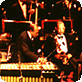
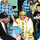
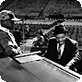
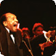

{% include menu.txt %}
Videos

Final Public Performance (2002)
Leading his big band at the Lionel Hampton Jazz Festival, with special tributes by Quincy Jones, Former President George Bush and UI President Bob Hoover.

Taking Jazz to the Schools (1999)
Working with students at Lapwai Elementary School in Idaho.

Reaching a New Generation (1995)
A teaching session at the University of Idaho with student DeWaylon McCoy.

The “Vibes President” (1994)
Hamp’s introduction at the 1994 Lionel Hampton Jazz Festival.
In Performance (1992)
With the University of Idaho Jazz Choir.

In Performance (1988)
Part of a live solo performance recorded at the University of Idaho.
The Lionel Hampton School of Music Dedication (1987)
Hamp’s comments at the dedication of the Lionel Hampton School of Music
Music is My Salvation (1987)
Comments on the importance of music.